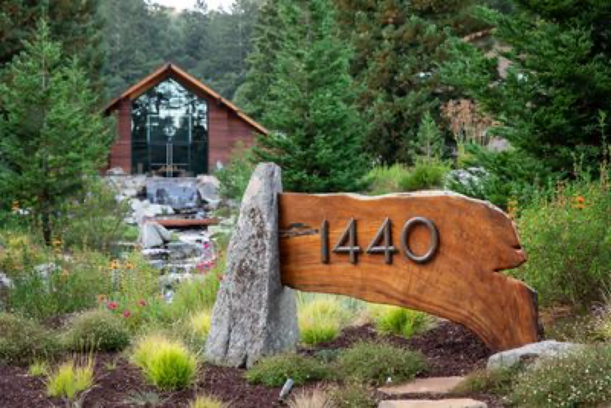
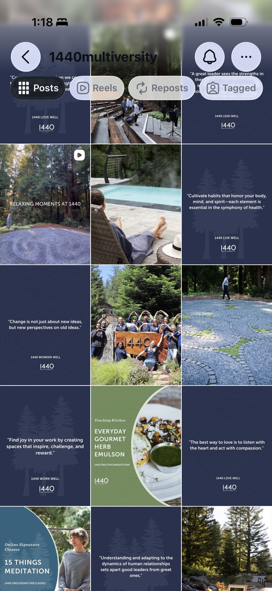
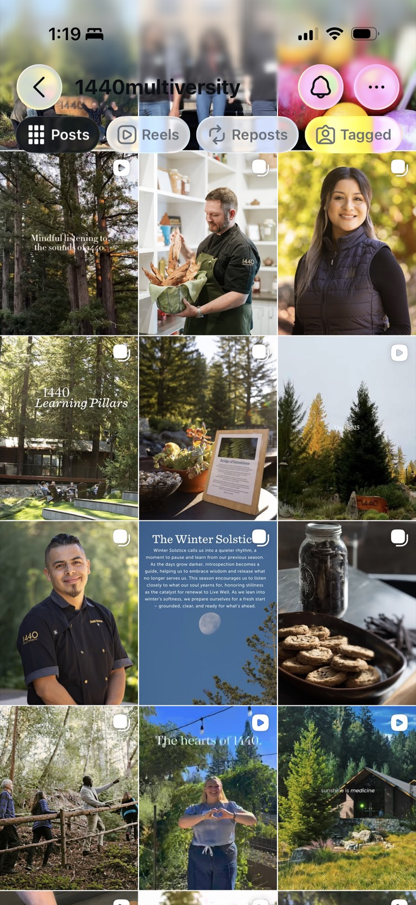
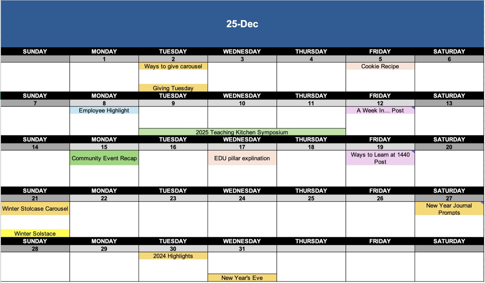
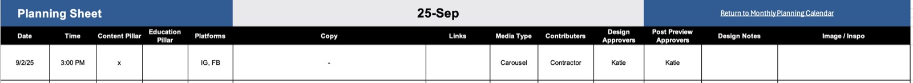
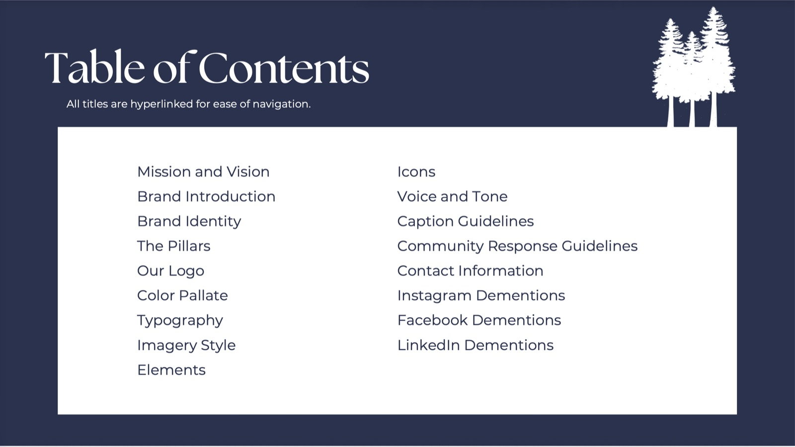
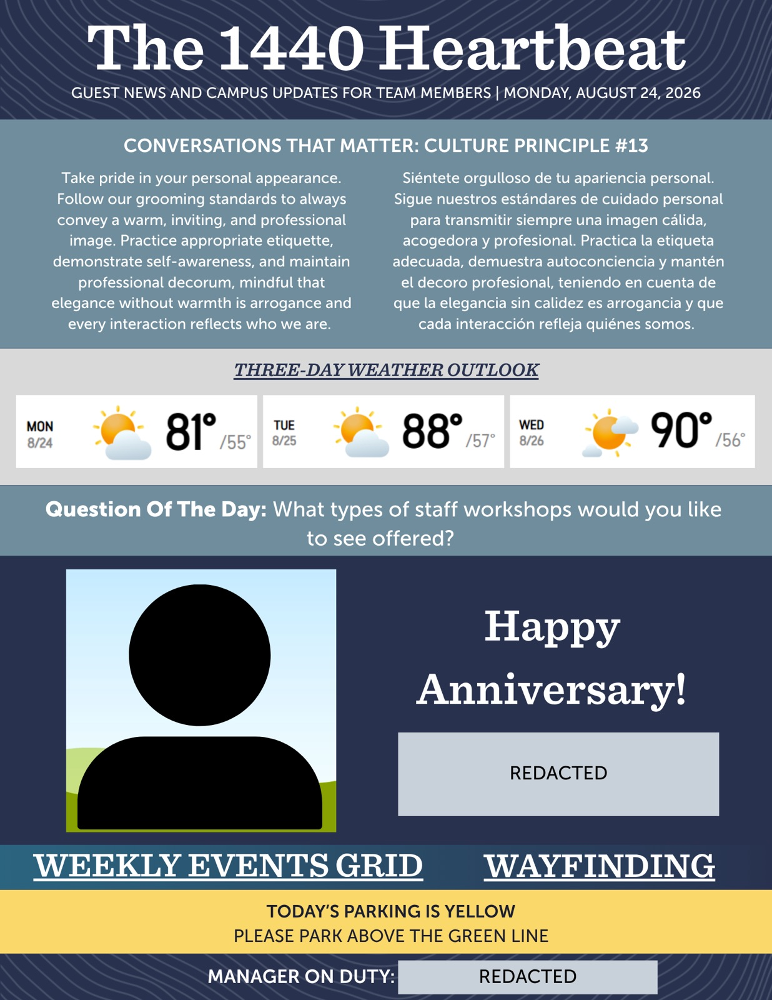
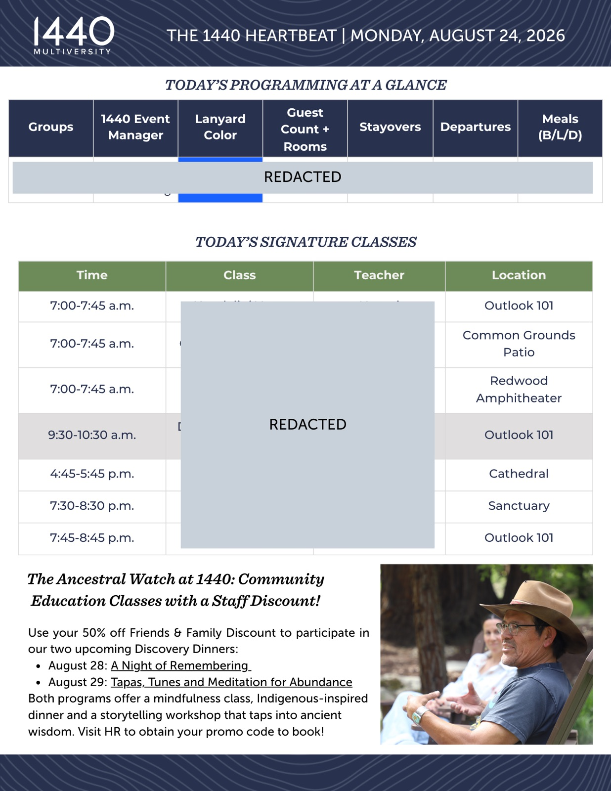
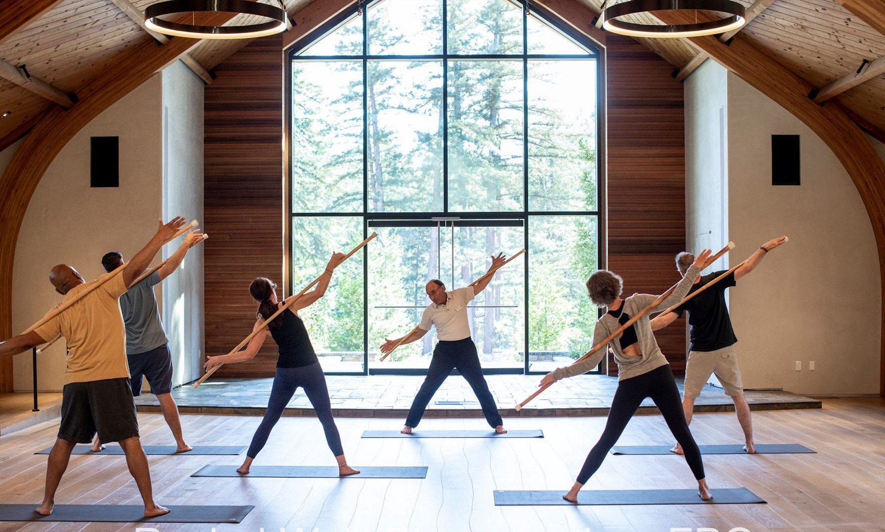

Case Study 01
1440 Multiversity
Lead social media, marketing, communications, and event initiatives to strengthen brand visibility and audience engagement. Develop strategies and systems that improve marketing operations, content consistency, and cross-functional collaboration. Leverage data, audience insights, and feedback to optimize campaigns and enhance the overall guest experience.
Assistant Manager of Social Media & Communications
February 2026 – Present · Milestone, ProProfs, Eventbrite
Assistant Manager of Social Media
August 2025 – February 2026 · Later, Canva, Meta Business Suite

Project summary
More than managing social
My role at 1440 goes beyond managing social media. I’m helping shape how the brand shows up, from content and communications to event marketing and the guest experience. By combining creativity, strategy, and data, I’ve built stronger systems, refreshed the brand’s digital presence, and created more meaningful ways for 1440 to connect with its community.

About the organization
About 1440 Multiversity
1440 Multiversity is a 501(c)(3) nonprofit learning destination and retreat center dedicated to creating hope for the living well. Serving both B2B and B2C audiences, 1440 hosts educational programs, corporate retreats, charitable gatherings, and community events.
Tools
- Later
- Meta Business Suite
- Canva
- CapCut
- Milestone
- Eventbrite
- ProProfs
Platforms
My role
Assistant Manager of Social Media & Communications
- Social Media Strategy
- Brand Management
- Internal Communications
- Event Marketing
- Community Engagement & Management
- Guest Experience
Social Media
I manage 1440 Multiversity’s Instagram and Facebook channels, leading a shift from a repetitive feed that contributed to viewer fatigue to a more authentic, lively, and visually engaging brand presence.
Since taking over the channels, average engagement rates have increased from 3% to 5.95% on Instagram and 2.14% to 7.04% on Facebook, strengthening audience engagement across both platforms.


Content planning & project management
One of the first things I implemented was systems surrounding social media marketing. I created a content calendar, a post planning sheet, and an approval process for each post to make sure it was seen by the necessary stakeholders before the post went out for public view.


Brand management
Established a more consistent brand presence across 1440’s social and marketing communications by developing brand guidelines, creating clear standards for voice and visuals, and implementing a content approval process. I continue to manage and maintain these standards to ensure messaging and creative remain consistent, recognizable, and aligned with the overall 1440 brand.

Communications
Manage internal and external communications for 1440 Multiversity and the 1440 Foundation, ensuring timely, clear, and consistent messaging. Oversee the daily newsletter and coordinate organizational updates while supporting external communications across digital channels.


Example of the daily newsletter
Event marketing
Support event marketing efforts by managing community class and event listings across Eventbrite and Facebook Events, while supporting paid social campaigns to increase program visibility and attendance. Work across teams to ensure events are accurately promoted and accessible to guests and the local community.

Community & guest experience
Support the guest experience throughout their time on campus, from welcoming and assisting guests to gathering feedback after their visit. Manage post-visit surveys to better understand guest satisfaction and identify opportunities to improve the overall experience.
Reflection
My time at 1440 Multiversity has expanded the way I approach marketing.
Coming into the role with a strong foundation in social media strategy, content, and audience engagement, I’ve had the opportunity to apply those skills while taking on a broader range of responsibilities across brand management, communications, event marketing, and the guest experience.
Working across these different areas has given me hands-on experience with how each part of marketing contributes to the overall brand experience. I’ve been able to put my broader marketing knowledge into practice, working across strategy, messaging, data, communications, and audience experience. This role has expanded my skill set and given me the practical experience to complement the marketing foundation I already had.